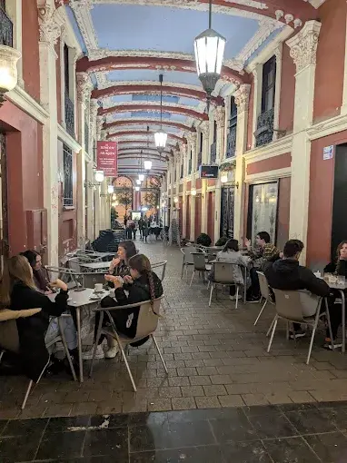

Zaragoza · Pasaje del Ciclón
Donde el café
florece
Café de especialidad, brunch sin prisa y muchas, muchas plantas. Un invernadero escondido bajo los porches, a dos pasos del Pilar.


La casa
Un pasaje, una puerta
de madera y un neón
Empujas la puerta y el ruido de la calle se queda fuera. Dentro hay madera vieja, luz cálida, un neón que dice lo que todos pensamos y plantas por todas partes — colgando, trepando, asomándose a las tazas.
Tostamos despacio, servimos despacio y nos gusta que te quedes un rato de más. Trae el libro. Trae al perro. Trae a quien quieras.
- Café de especialidad, molido al momento
- Repostería y brunch de elaboración propia
- Opciones veganas y sin gluten
- Pet friendly & wifi para quedarse
La carta
Lo que sale de la taza
Una muestra de la casa, para enseñar el tono. carta de ejemplo
Pendiente de sustituir por los platos y precios reales.
Matcha & infusiones
Brunch & tostadas
Frío & limonadas
“Bajo los arcos del pasaje, el tiempo va un poco más lento.”
Pasaje del Ciclón · Zaragoza
El rincón
Así se ve por dentro
interior · plantas
latte art
brunch
Visítanos
Te guardamos
la mesa del fondo
C/ Santiago 3-5 — Pasaje del Ciclón
50001 Zaragoza
Horario por confirmar
- Lunescerrado
- Martes — Jueves09:00 — 20:30
- Viernes09:00 — 22:00
- Sábado10:00 — 22:00
- Domingo10:00 — 20:00